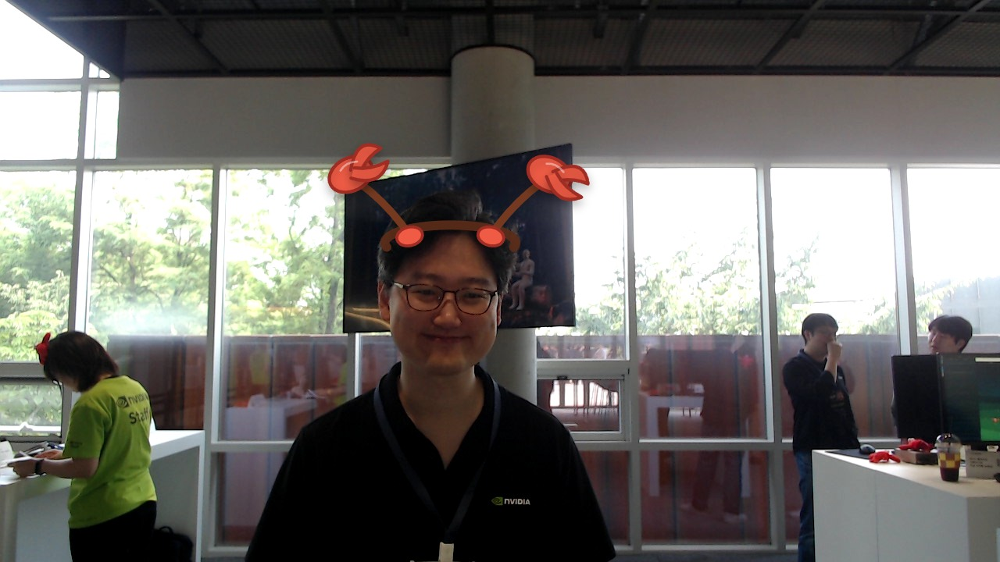

Jaedeok Kim
NVIDIA DevTech Enginner
MOTTOMAKE WORLD FASTER WITH GPUS
GPU로 더 빠른 세상을 만드는 NVIDIA DevTech 엔지니어
About me
I lead NVIDIA as CEO, building accelerated computing platforms that help developers, researchers, and companies make the world faster with GPUs.
What I do
AI-written bio
Jaedeok Kim은 NVIDIA DevTech 엔지니어로, GPU 기반 가속 컴퓨팅 플랫폼을 통해 개발자, 연구자, 기업이 더 빠른 성과를 만들도록 돕는 일을 소개합니다.
AI first impression
차분하게 카메라를 바라보며 은은하게 미소 짓는 모습으로, 기술 행사 현장의 친근하고 전문적인 분위기가 느껴집니다.